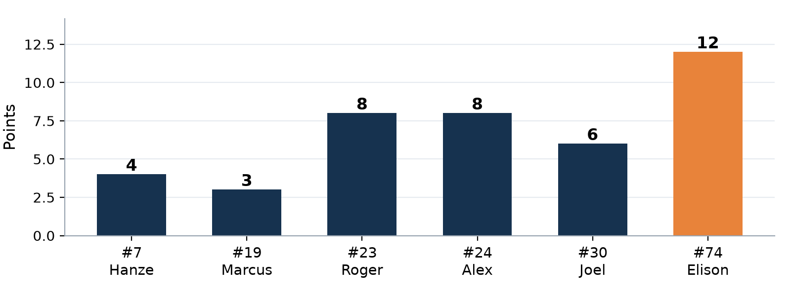
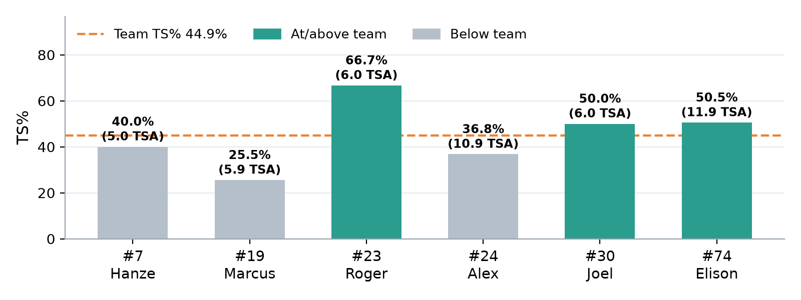
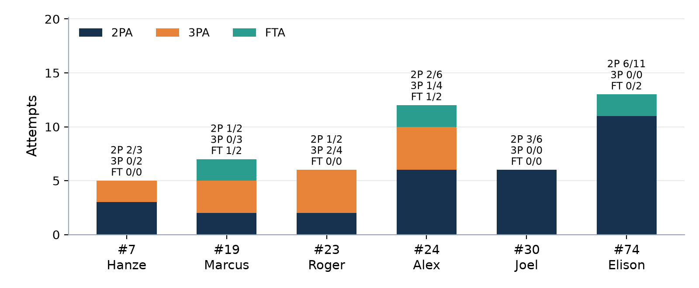
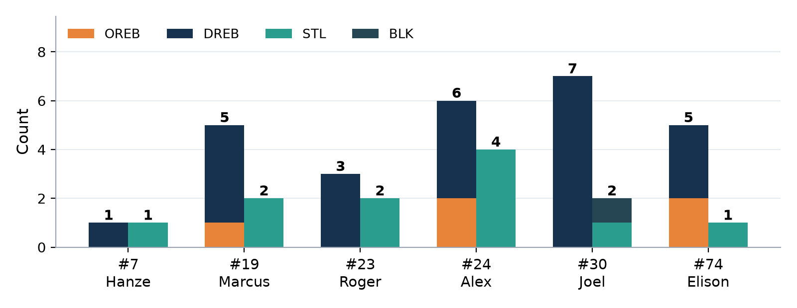

Player Game Report
| 41 | – | 23 |
| GD Ruse30 | Splash Brothers |
Box score analysis · Compared with earlier games where available
1The game at a glance
Three big messages
- Splash Brothers scored only 23: about 0.45 points per possession (0.57 and 0.53 in the first two games).
- 11 STL (Alex 4) and 22 DREB (Joel 7), our most defensive rebounds of the season.
- PPP 0.81 (1.06 last game), TS% 44.9%, 3PT 3-13, FT 2-6.
- We held our inside finishing at 2P 50%, which shows the 28.6% of game 1 was a bad night, not who we are.
- 10 TO (7 last game) and 7 AST (14 last game).
- 16 PF: our first game above 12, and more than the first two games combined (7 + 4).
2How we played as a team
| Stat | 9 Sep Honey Badgers | 16 Sep The Wolves | 23 Sep Splash Brothers |
|---|---|---|---|
| Points (box score) Sum of player points | 46 | 68 | 41 |
| PPP Points per possession | 0.90 | 1.06 | 0.81 |
| TS% / eFG% Shooting efficiency | 44.4% / 43.6% | 50.0% / 50.0% | 44.9% / 45.3% |
| 2P Shots inside the arc | 10-35 (28.6%) | 23-46 (50.0%) | 15-30 (50.0%) |
| 3P Shots behind the arc | 7-12 (58.3%) | 6-18 (33.3%) | 3-13 (23.1%) |
| FT · FT rate Free throws · trips to the line per shot | 5-11 (45.5%) · 23.4% | 4-9 (44.4%) · 14.1% | 2-6 (33.3%) · 14.0% |
| AST · TO · AST/TO Good passes vs giveaways | 7 · 11 · 0.64 | 14 · 7 · 2.00 | 7 · 10 · 0.70 |
| TO rate Share of possessions lost to a turnover | 21.6% | 10.9% | 19.7% |
| OREB · DREB Offensive · defensive rebounds | 12 · 16 | 11 · 11 | 5 · 22 |
| OREB ÷ our misses Misses we got back | 40.0% | 31.4% | 20.0% |
| STL · BLK Steals · blocks | 9 · 0 | 19 · 0 | 11 · 1 |
| PF Personal fouls | 7 | 4 | 16 |
| Opponent PPP (est.) Our defence | 0.57 | 0.53 | 0.45 |
- 41 points from 43 shots: PTS/FGA 0.95, eFG% 45.3%, TS% 44.9%, all below the Wolves game.
- 3PT 3-13 (23.1%): Roger 2-4, everyone else 1-9. FT 2-6 (33.3%): free throws are now 11-26 (42.3%) over three games.
- Ball care: 10 TO vs 7 AST (AST/TO 0.70). Elison had 5 of the 10. Only 7 of 18 baskets came from a pass.
- Rebounding: 22 DREB (11 last game), but only 5 OREB (12 and 11 before): we got back just 20% of our misses.
- Fouls: 16 PF (Hanze 4; Roger, Alex, Elison 3 each). Better teams will make those free throws.
- Defence: 0.45 opponent PPP (season best)
- DREB: 22 (season high)
- 11 STL; every player with stats had a steal
- 2P% held at 50%
- 16 PF (first game over 12)
- 10 TO, AST/TO 0.70
- FT 2-6; 3PT 3-13
- Only 5 OREB (12 and 11 before)
Our defence is now a proven strength: three games, three low scores against us. To beat stronger teams we need the offence and discipline of the Wolves game together with this defence: fewer fouls, fewer turnovers, more free throws made.
BFull box score
Exactly as transcribed from the official box score. Tap a name for that player's page.
| Player | PTS | FG | 2P | 3P | FT | OREB | DREB | REB | AST | STL | BLK | TO | PF |
|---|---|---|---|---|---|---|---|---|---|---|---|---|---|
| #7 Hanze | 4 | 2-5 | 2-3 | 0-2 | 0-0 | 0 | 1 | 1 | 2 | 1 | 0 | 0 | 4 |
| #17 Ryan | no recorded stats | ||||||||||||
| #19 Marcus | 3 | 1-5 | 1-2 | 0-3 | 1-2 | 1 | 4 | 5 | 1 | 2 | 0 | 2 | 2 |
| #23 Roger | 8 | 3-6 | 1-2 | 2-4 | 0-0 | 0 | 3 | 3 | 0 | 2 | 0 | 1 | 3 |
| #24 Alex | 8 | 3-10 | 2-6 | 1-4 | 1-2 | 2 | 4 | 6 | 1 | 4 | 0 | 1 | 3 |
| #30 Joel | 6 | 3-6 | 3-6 | 0-0 | 0-0 | 0 | 7 | 7 | 1 | 1 | 1 | 1 | 1 |
| #74 Elison | 12 | 6-11 | 6-11 | 0-0 | 0-2 | 2 | 3 | 5 | 2 | 1 | 0 | 5 | 3 |
| Team (box score) | 41 | 18-43 | 15-30 | 3-13 | 2-6 | 5 | 22 | 27 | 7 | 11 | 1 | 10 | 16 |
3Charts




- Balanced scoring: four players with 6+ points.
- Efficiency gap: Roger should look for more shots; Alex and Marcus need better-quality ones.
- Defence is a team thing.
4Team: what to look for in the next games
Same team targets every game. Here's how we've done so far:
| Team target | 9 Sep | 16 Sep | 23 Sep | |
|---|---|---|---|---|
| PPP (points per possession) | ≥ 0.95 | 0.90 ✗ | 1.06 ✓ | 0.81 ✗ |
| TS% (true shooting) | ≥ 48% | 44.4% ✗ | 50.0% ✓ | 44.9% ✗ |
| 2P% (finishing inside the arc) | ≥ 45% | 28.6% ✗ | 50.0% ✓ | 50.0% ✓ |
| FT% (free throws) | ≥ 60% | 45.5% ✗ | 44.4% ✗ | 33.3% ✗ |
| Turnovers (TO) | ≤ 8 | 11 ✗ | 7 ✓ | 10 ✗ |
| AST/TO | ≥ 1.00 | 0.64 ✗ | 2.00 ✓ | 0.70 ✗ |
| Personal fouls (PF) | ≤ 12 | 7 ✓ | 4 ✓ | 16 ✗ |
| Steals (STL) | ≥ 8 | 9 ✓ | 19 ✓ | 11 ✓ |
| Offensive rebounds (OREB) | ≥ 8 | 12 ✓ | 11 ✓ | 5 ✗ |
| Defensive rebounds (DREB) | ≥ 15 | 16 ✓ | 11 ✗ | 22 ✓ |
| Opponent PPP (est.) | ≤ 0.65 | 0.57 ✓ | 0.53 ✓ | 0.45 ✓ |
| Targets hit | 5 / 11 | 9 / 11 | 4 / 11 |
| What to look for | This game | Next-game goal |
|---|---|---|
| FT% | 2-6 (33.3%) | ≥ 60% |
| 2P% (finishing) | 15-30 (50.0%) | ≥ 50% |
| FT rate | 14.0% | 20%+ |
- At the line: same routine every time (same dribbles, deep breath, same release).
- If you're not open from three, attack the basket: contact means free throws.
| What to look for | This game | Next-game goal |
|---|---|---|
| Turnovers | 10 | ≤ 8 |
| AST/TO | 0.70 | ≥ 1.00 |
- Drive into the paint and jump stop on two feet, then shoot or pass.
- When two defenders come at you, pick up the ball and pass high.
| What to look for | This game | Next-game goal |
|---|---|---|
| Personal fouls | 16 | ≤ 12 |
| Offensive rebounds | 5 | ≥ 8 |
| Steals (keep it!) | 11 | ≥ 8 |
- Beat your player to the spot. Hands up, not out.
- On every shot, the two closest players crash the offensive glass.
5Your player card
Find your card and compare yourself with the Team row. Usage share = how much of the team's offence ends with you (equal split here ≈ 16.7%).
| Player | PTS | FG | TS% | REB | AST/TO | Stocks | PF | Usage |
|---|---|---|---|---|---|---|---|---|
| #7 Hanze | 4 | 2-5 | 40.0% | 1 | 2/0 | 1 | 4 | 9.0% |
| #19 Marcus | 3 | 1-5 | 25.5% | 5 | 1/2 | 2 | 2 | 14.2% |
| #23 Roger | 8 | 3-6 | 66.7% | 3 | 0/1 | 2 | 3 | 12.6% |
| #24 Alex | 8 | 3-10 | 36.8% | 6 | 1/1 | 4 | 3 | 21.4% |
| #30 Joel | 6 | 3-6 | 50.0% | 7 | 1/1 | 2 | 1 | 12.6% |
| #74 Elison | 12 | 6-11 | 50.5% | 5 | 2/5 | 1 | 3 | 30.3% |
| Team | 41 | 18-43 | 44.9% | 27 | 7/10 | 12 | 16 | 100% |
#17 Ryan: every column is zero in the box score. He most likely didn't play, or played only briefly without a recorded stat (minutes aren't recorded). That's not a judgement on anyone, so there's no card. The box score can't see screens, box-outs or talking on defence either.
- 2 AST, 0 TO: the only player with assists and zero turnovers.
- 2-3 inside the arc: good moments to attack.
- 1 STL; 4 AST and 1 TO across your two games.
- 4 PF = 25% of the team's fouls (1 PF in game 1). One more and you're out.
- 3PT 0-2 (1-5 over two games); TS% 40.0%.
- 1 REB (1 in two games).
| What to look for | This game | Next-game goal |
|---|---|---|
| Fouls (PF) | 4 | 2 or fewer |
| Rebounds | 1 | 3+ |
| Keep: AST vs TO | 2 AST · 0 TO | AST ≥ TO |
- Once you have 2 fouls, defend with extra care: chest up, hands high, no reaching.
- Drift to the free-throw line on shots: that's where long rebounds land.
- 5 REB and 2 STL: the effort was there again.
- 2 FTA on 5 shots: you attacked and drew fouls.
- 10 STL and 15 REB over three games: real all-round impact.
- 3 PTS, TS% 25.5% (11 and 18 in the first two games): a cold night, 0-3 from three.
- 2 TO vs 1 AST; 9 TO over three games is the most on the team.
| What to look for | This game | Next-game goal |
|---|---|---|
| Turnovers | 2 | 1 or fewer |
| Share of shots that are threes | 60% | 40% or less when cold |
| Keep: REB / STL | 5 REB · 2 STL | 5+ REB · 2+ STL |
- If your first three misses, make your next shot an attack to the rim.
- Catch, look, decide fast: shoot, drive or pass.
- TS% 66.7%, best on the team: 8 PTS on 6 shots.
- 3PT 2-4, your first threes of the season; everyone else went 1-9.
- 2 STL, 1 TO; 9 STL over three games.
- 3 PF again: 3 in every game (9 total, a third of the team's fouls).
- 0 AST; usage only 12.6%: look for your shot more.
| What to look for | This game | Next-game goal |
|---|---|---|
| Fouls (PF) | 3 | 2 or fewer |
| Three-point attempts | 2-4 | 4+ when open |
| Assists | 0 | 1+ |
- Be ready before the catch: hands up, knees bent, feet set.
- On defence, stay in front with your feet. Don't reach on the dribble.
- 4 STL (team high) and 6 REB (2 OREB).
- Only 1 TO: 4 TO over three games with a big load.
- 3PT is your weapon: 7-15 (46.7%) over three games.
- 3-10 FG, TS% 36.8%; 2P 2-6 (5-19 over three games).
- 3 PF after 0 in each of the first two games.
| What to look for | This game | Next-game goal |
|---|---|---|
| 2P% (finishing) | 2-6 (33.3%) | 50% |
| Fouls (PF) | 3 | 2 or fewer |
| Keep: STL / REB | 4 STL · 6 REB | 3+ STL · 6+ REB |
- Near the rim, slow down one beat: two-foot finish, use the backboard.
- Before you shoot: open? good spot? in rhythm? If not, pass or drive.
- 7 DREB, team high: back up after 3 REB last game.
- The season's only BLK, plus 1 STL, with just 1 PF.
- 3-6, all twos: TS% 50.0%.
- 0 OREB (3 and 1 before): chase our misses.
- 0 FTA: go up stronger and look for contact.
| What to look for | This game | Next-game goal |
|---|---|---|
| Offensive rebounds | 0 | 2+ |
| Free-throw attempts | 0 | 2+ |
| Keep: DREB / PF | 7 · 1 | 6+ · ≤ 2 |
- When a teammate shoots, step inside your defender and go get the miss.
- Use a shot fake near the rim to draw contact.
- 12 PTS, team high; 2P 6-11 (54.5%).
- 5 REB, 2 OREB, 2 AST.
- TS% 50.5%; 50 PTS over three games.
- 5 TO = half the team's turnovers (2 and 1 in the first two games).
- FT 0-2 (1-4 over three games).
- 3 PF.
| What to look for | This game | Next-game goal |
|---|---|---|
| Turnovers | 5 | 2 or fewer |
| FT% | 0-2 | Make at least half |
| Keep: 2P% | 54.5% | 50%+ |
- Look before you drive: know where the help is.
- If two defenders close in, pick up the ball and pass high.
7Data notes
- Source: the official box score for this game only (no video, no minutes, no opponent stats). Every cell was transcribed and checked: player rows add up to the team totals, and for every player FGM = 2PM + 3PM, FGA = 2PA + 3PA, REB = OREB + DREB and PTS = 2×2PM + 3×3PM + FTM.
- Possessions are estimated (FGA + 0.44×FTA − OREB + TO), and opponent PPP assumes both teams had a similar number of possessions.
- Small samples: most of us took 3–16 shots, so one make or miss moves a percentage a lot. Look for patterns over several games, not one.
- Zero rows (#17 Ryan) are treated as "didn't play or no stats recorded". Nothing here judges those players.
- What a box score can't see: screens, box-outs, help defence, talking, effort. They matter, even though they don't show up here.
- Using your goals: pick one or two focus points from your card before each game, then check the box score afterwards. Small steps add up.
Every stat explained: Glossary